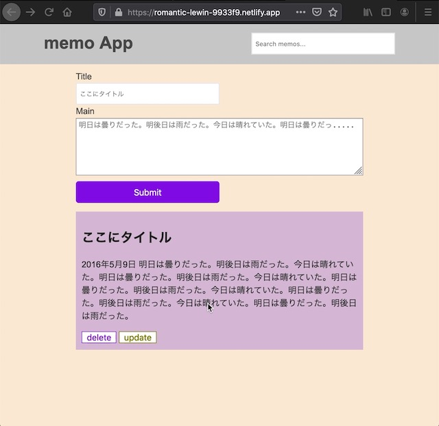

プロジェクト一覧

トリビュートページ
HTML,CSSのプロジェクト。ウェブページを作成する際の初期設定を学ぶ。
アプリを触ってみる。 gifでみる。 コードをみる。{kind=link}
キーワード：セマンティクス、google font、ress.css

webエンジニアを目指しています。
HTML,CSSのプロジェクト。ウェブページを作成する際の初期設定を学ぶ。
アプリを触ってみる。 gifでみる。 コードをみる。キーワード：セマンティクス、google font、ress.css
初めまして。現在webエンジニアを目指しています。久貝です。2019年10月よりNode.js, Express, MongoDBを独学しました。2020年6月からはHTML, CSS, Javascript, Reactを学習しています。IT業界の職務について、インターン、アルバイト含め実務経験はありません。希望としてはフロントエンド、バックエンドこだわりなく経験してみたいと考えております。会津大学コンピュータ理工学部2019年卒。卒論ではDeep Q Networkを使用して7x7格子の簡素なパックマンゲームを学習するプログラムを作成。
| HTML, CSS | レスポンシブウェブサイトを制作できる。MDN Web Docsを利用できる。BEM（予定）, SASS（予定） |
|---|---|
| Javscript | Todoアプリが作れる。ECMAScript, DOM API, Fetch API, Promise, JSON, オブジェクト指向プログラミング（予定） |
| React | Main Conceptの技術を使ったアプリ開発（予定） |
| Vue | 基本コンセプトとvuex, vue-routerがわかる。 |
| Node.js, Express | APIを実装できる。単体テストができる。RESTful API, Mocha, Chai, phantomJS, HelmetJS, passport, localAuth, githubAuth, Socket.io |
| MongoDB, Mongoose | CRUD機能を実装できる。ドキュメントが読める。 |
| MySQL | 基本的な問い合わせができる。ドキュメントが読める。 |
| Git, Github | コミットできる。 |
| プログラミング | PaizaのA問題を解くことができる。基本的なアルゴリズムとデータ構造を理解できる。 |
| 性別 | 男性 / 独身 |
|---|---|
| 生年月日 | 1996年4月9日（火 |
| 現在の状況 | 無職 |
| 学歴 | 会津大学コンピュータ理工学部2019年卒 |
| アルバイト経験 | 塾講師、ホテル業 |
| 住所 | 千葉県船橋市（現在は浅草のホステルに滞在中 |
| 出身地 | 沖縄県宮古島市 |
お茶でも飲みませんか？
{kind=link}